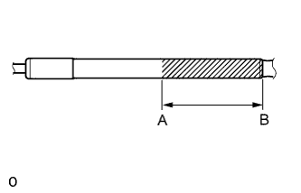

КРОНШТЕЙН КАПОТА > СНЯТИЕ С ЭКСПЛУАТАЦИИ |
| 1. СНЯТИЕ КРОНШТЕЙНА КАПОТА В СБОРЕ С ЭКСПЛУАТАЦИИ |
Зажмите стойку капота в тисках в горизонтальном положении таким образом, чтобы шток поршня был выдвинут.
|  |
Надевайте защитные очки. Ножовкой медленно сделайте разрез между точками A и B, показанными на рисунке, чтобы выпустить газ.
| Участок | Заданные условия |
| A - B | 50 мм (1,97 дюйма) |